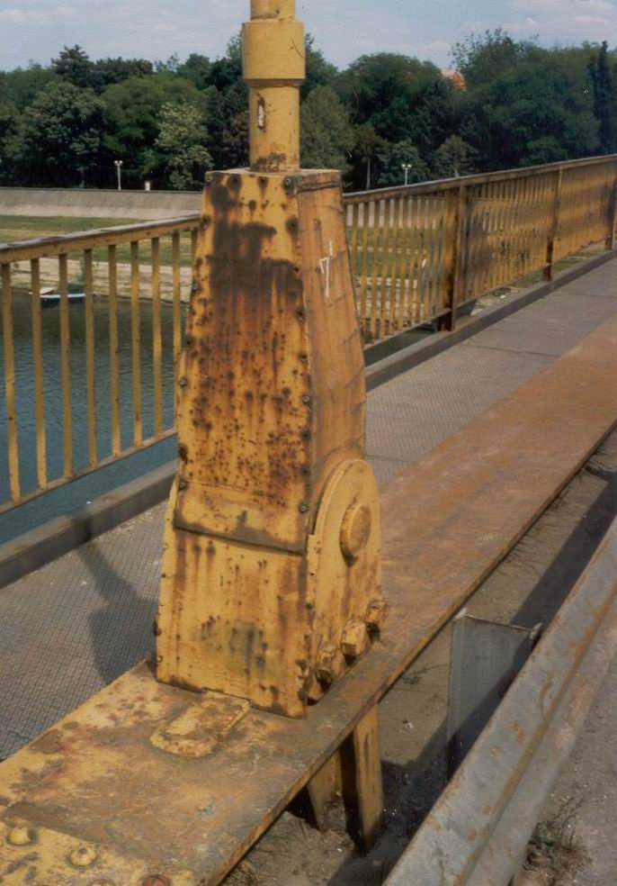
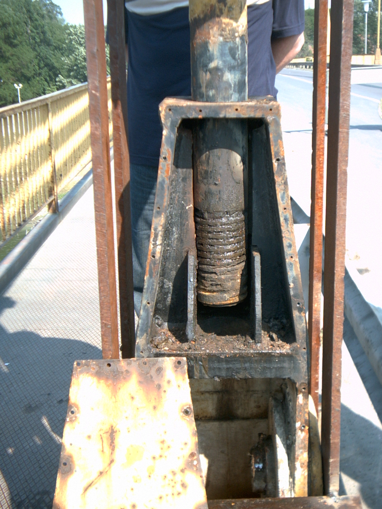

ИММ: Идеја за семестрални задатак (пројект) - концепт.
ToolNotes: Metals 101-7 Tensile Testing and the Stress Strain Diagram |05:50|
Instron: What is a Universal Testing Machine/Tensile Testing Machine? |03:50|
HST Group Testing machine: Software of Hydrualic universal testing machine |05:17|
ZwickRoellTV: Reliable Test Results in Materials Testing |04:04|
ZwickRoellTV: Crack growth test on CT specimen to ASTM E647 with ZwickRoell HA250 |02:03|
Epsilon Technology Corp.: Hot-mountable extensometer for high-temperature strain measurement (Epsilon Technology - Model 3549) |03:18|
SimTech05: Ductile Damage evolution in Abaqus (02 - Effect of Fracture strain on Element deletion) |10:01|
Ahmed Elkady: #33 ABAQUS Tutorial: Metal Plasticity | Engineering to True Stress-Strain Conversion |30:15|
ZwickRoellTV: Robotic Testing System roboTest L for Tensile Tests on Rubber |01:29|
Литература
М.М. Ристић: Принципи науке о материјалима, САНУ, Књига DCXVII, Одељење техничких наука, Београд, 1993.
H.V.V. Lawrence: Elements of Materials Science and Engineering, Addison-Wesley Publishing Company, USA, 1984.
R.W.Hertzberg: Deformation and Fracture Mechanics of Engineering Materials, John Wiley & Sons, New York, 1976.
због тога што је и моје интересовање усмерено микро и макро механичком моделирању материјала, приложена је и шира литература за информисање и истраживање.
J.W. Dally, R.J. Bonenberger, W.L. Fourney: Mechanics II, College House Enterprises, LLC, 2015.
I.S. Gutzow, J.W.P. Schmelzer: The Vitreous State (Thermodynamics, Structure, Rheology and Crystallization, Springer-Verlag Berlin Heidelberg, 2013.
M.F. Ashby: Materials Selection in Mechanical Design, Published by Elsevier Ltd., 2011.
A.K. Kaw: Mechanics of composite materials, CRC Press, 2006.
B. Harris: Engineering composite materials, The Institute of Materials, London, 1999.
D.R. Askeland, P.P. Fulay: Essentials of Materials Science and Engineering, Cengage Learning, Toronto, 2009.
A.K. Mikitaev, M.Kh. Ligidov, G.E. Zaikov: Polymers, polymer blends, polymer composites, and filled polymers, Nova Science Publishers, Inc., New York, 2006.
National Academies of Sciences, Engineering, and Medicine 2011. A Manual for Design of Hot-Mix Asphalt with Commentary. Washington, DC: The National Academies Press. https://doi.org/10.17226/14524.
C. Nicholls, A. Hannah: Asphalt Mixture Selection, CRC Press is an imprint of Taylor & Francis Group, 2020.
A.K. Bhargava, C.P. Sharma: Mechanical behavioour and testing of materijals, PHI Learning, New Delhi, 2014.
D.B. Braun, M.R. Rosen: Rheology modifiers handbook: practical use & application, William Andrew Publishing Norwich, New York, USA, 2000.
H. Münstedt: Rheological and Morphological Properties of Dispersed Polymeric Materials, Carl Hanser Verlag, Munich 2016.
C.D. Han: Rheology and processing of polymeric materials-Volume 1, Oxford University Press, Inc., 2007.
C.D. Han: Rheology and processing of polymeric materials-Volume 2, Oxford University Press, Inc., 2007.
G.Z. Voyiadjis: Handbook of Damage Mechanics, Springer Science+Business Media, New York, 2015.
H. Altenbach, M. Brünig: Inelastic Behavior of Materials and Structures Under Monotonic and Cyclic Loading, Springer International Publishing, Switzerland, 2015.
R.W. Hertzberg: Deformation and fracture mechanics of engineering materials, John Wiley & Sons, Inc., 1996.
R.W. Hertzberg, R.P. Vinci, J.L. Hertzberg: Deformation and fracture mechanics of engineering materials, John Wiley & Sons, Inc., 2013.
T. Boukharouba, M. Elboujdaini, G. Pluvinage: Damage and Fracture Mechanics, Springer Science + Business Media B.V. 2009.
Z.P. Bažant, J. Planas: Fracture and size effect, CRC Press is an imprint of Taylor & Francis Group, Boca Raton, London, New York, 1998.
T.L. Anderson: Fracture mechanics, CRC Press is an imprint of Taylor & Francis Group, Boca Raton, London, New York, 2017.
J. Tejchman, J. Bobi´nski: Continuous and Discontinuous Modelling of Fracture in Concrete Using FEM, Springer-Verlag Berlin Heidelberg, 2013.
ИММ: Прекинута веза вешаљке и греде за укрућење на друмском ланчаном мосту преко реке Тисе на путу Кањижа - Нови Кнежевац замором материјала |2003.год.|
Imm-2023

-1-

-2-
-3-
ИММ: Прекинута веза вешаљке и греде за укрућење на друмском ланчаном мосту преко реке Тисе на путу Кањижа - Нови Кнежевац замором материјала |2003.год.|
ИММ: Узорци за тестирања при затезању.
ГФС: Утврђивање статичког модула еластичности на основу тестирања при затезању.
ИММ: Узорци за тестирања при чистом савијању.
ГФС: Утврђивање статичког модула еластичности на основу тестирања при чистом савијању.


 ИММ: Узорци за тестирања при затезању.
ИММ: Узорци за тестирања при затезању.
 ГФС: Утврђивање статичког модула еластичности на основу тестирања при затезању.
ГФС: Утврђивање статичког модула еластичности на основу тестирања при затезању.
 ИММ: Узорци за тестирања при чистом савијању.
ИММ: Узорци за тестирања при чистом савијању.
 ГФС: Утврђивање статичког модула еластичности на основу тестирања при чистом савијању.
ГФС: Утврђивање статичког модула еластичности на основу тестирања при чистом савијању.